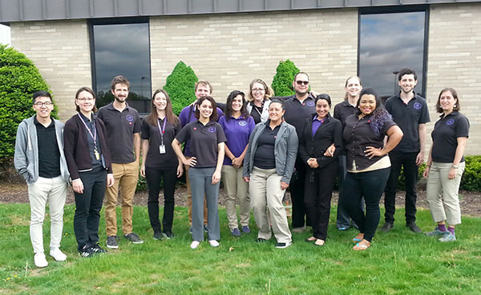
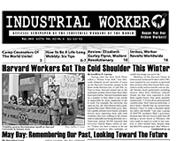

This is the news page for all IWW Departments and Unions. This page displays *all* news items from every Department and Union. To see news only from a particular Department, click on the Department title below.
For an overview of the IWW's Union structure, please visit the Unions homepage.
For branch, campaign, or general labor news, click on the appropriate sub-menu bars at the left under
the main "news" bar.
Submitted on Sun, 05/31/2015 - 5:32pm
Headlines:
- #ResistenciaMovistar: A Strike Of This Century In Spain
- IWW Statement On Baltimore Uprising And Police Repression
- Amtrak Wreck Could Have Been Prevented
Features:
- May Day Celebrated Around The World
- Staughton Lynd Reviews New Saul Alinsky Biography
- Call To Support Migrant Workers In Europe
Download a Free PDF of this issue.
Submitted on Thu, 05/28/2015 - 9:52am
 From iww.org.uk
From iww.org.uk
SUPPORT BAHAR MUSTAFA - The 2015 annual IWW Conference strongly approved an emergency motion proposed by London IWW to stand in solidarity with Bahar Mustafa, a Goldsmiths students' union officer who has faced persecution in the mainstream media and death threats from the right wing for organising a meeting for BME (Black and Minority Ethnic) women and non-binary people. We support Bahar and the right of the oppressed to self-organise, and we encourage our members and supporters to sign this petition to defend Bahar.
Here is the URL of the petition in support of Bahar: https://www.change.org/p/goldsmiths-college-and-beyond-open-letter-in-solidarity-with-bahar-mustafa-welfare-and-diversity-officer-goldsmiths
FULL SOLIDARITY WITH BAHAR AND BME ORGANISING!
Read the full story.
Submitted on Sat, 05/16/2015 - 8:07pm
From the PFSJC IWW
The following was read by several workers at the Board of Trustees meeting on Monday, 05/11, as a means of publicly informing the board and administration of our forming a union:
Whereas, we come to you today as an intergenerational community that has chosen to collectively act upon its longstanding concern about the disconnect between the principles of Paulo Freire and the practices of the social justice charter school we have come to love that bears his name. And as such, we appreciate this opportunity to be heard, because as Freire said, “Any situation in which some men prevent others from engaging in the process of inquiry is one of violence;… to alienate humans from their own decision making is to change them into objects.”
Submitted on Mon, 05/04/2015 - 10:31am
 We the undersigned declare our solidarity with the struggle for justice in the case of Freddie Gray and all other victims of police brutality. While we celebrate the May 1st announcement that the six police officers responsible for the death of Freddie Gray will face criminal charges (an outcome that would not have happened if not for the massive resistance in the streets of Baltimore and other cities) we also recognize that this is only a tiny step toward addressing the underlying causes that led to this injustice. As long as entrenched poverty, institutional racism, lack of educational and recreational opportunities, and an unaccountable and increasingly militarized police force continue to exist, there will be no justice or safety for people of color or the working class in general in Baltimore or anywhere else. We believe that these root causes must be addressed both in the streets and in the workplace.
We the undersigned declare our solidarity with the struggle for justice in the case of Freddie Gray and all other victims of police brutality. While we celebrate the May 1st announcement that the six police officers responsible for the death of Freddie Gray will face criminal charges (an outcome that would not have happened if not for the massive resistance in the streets of Baltimore and other cities) we also recognize that this is only a tiny step toward addressing the underlying causes that led to this injustice. As long as entrenched poverty, institutional racism, lack of educational and recreational opportunities, and an unaccountable and increasingly militarized police force continue to exist, there will be no justice or safety for people of color or the working class in general in Baltimore or anywhere else. We believe that these root causes must be addressed both in the streets and in the workplace.
Submitted on Thu, 04/30/2015 - 3:13pm

Headlines:
- Harvard Workers Got The Cold Shoulder This Winter
- NYC IWW: Beverage Plus, Pay Up!
- Strikes, Worker Revolts Worldwide
Features:
- May Day: Remembering Our Past, Looking Toward The Future
- How To Be A Life-Long Wobbly: Six Tips
- Review: Elizabeth Gurley Flynn, Modern Revolutionary
Download a Free PDF of this issue.